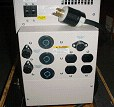
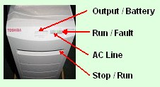
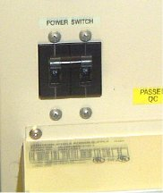
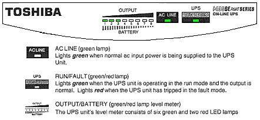
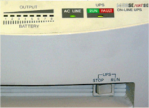

Troubleshooting Toshiba UPS
Purpose
This document provides troubleshooting information for the Toshiba 1400 SE/XL Plus (Powervar ABCDEF Series) Uninterruptible Power Supply (UPS). For use with CX-5, CX-7, CX-9, LX-20, DxI and DxC.
UPS Service
Warranty support for the Toshiba UPS is provided through the UPS supplier. The UPS should not be returned to Chaska.
To obtain parts or service for the Toshiba UPS, call 800-231-1412 or 713-466-0277 and ask for Field Service
Have this information available:
- Model number
- Serial number
- Installation date
- Application
UPS Front and Rear

- Main power switch, top left
- Input cord (NEMA L6-20P), top right
- 120 V AC outlets (5-15R), bottom right
- 240 V AC outlets (L6-20R), bottom left. The DxI power cord connects here.

- Output and battery status indicator (displays load when AC line power is present and battery capacity when AC line is not present)
- Run and fault indicator
- AC line indicator
- Stop and run switch (enables and disables the UPS output)
Troubleshooting
| Possible Problem | Action |
|---|---|
| Faulty startup | Set main power switch on UPS rear panel to
On.
 Note:
|
| Status indicators not functioning or power not available. | Confirm normal status indicators on UPS front panel:
 Note: If AC line indicator is not lit, then confirm that power is present at the wall outlet.
|
| UPS switch not set to Run. | Confirm that UPS stop/run switch is set to
Run .
 |
| Faulty power cord or power receptacles. | Power on the DxI system and confirm that the system operates when powered by the UPS.
|